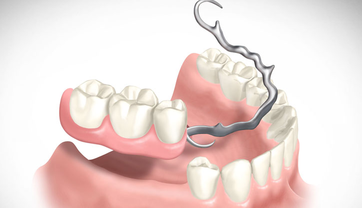
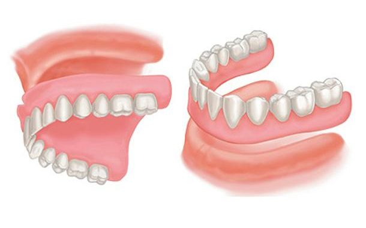
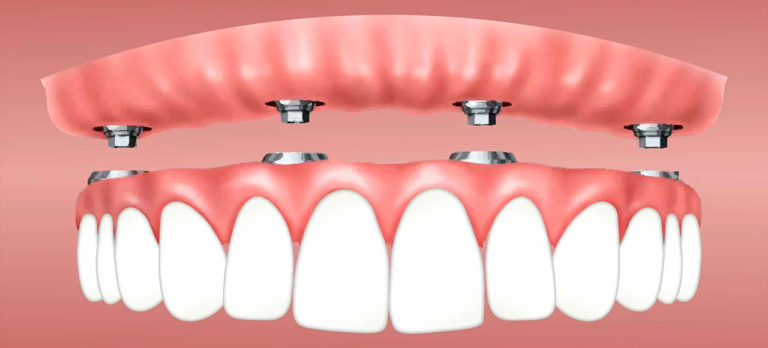

Como dentes mal cuidados podem acabar com a sua vida social
Dezembro, 27, 2022
As próteses dentárias são dispositivos utilizados quando se ocorre a perda total ou de alguns dentes. Elas podem ser fixas (implantadas na arcada dentária) ou removíveis (apoiadas na superfície da gengiva) e variam de acordo com o tratamento indicado para cada caso. Além de serem consideradas importantes na estética, as próteses dentárias são responsáveis por devolver o equilíbrio do sistema mastigatório, já que devido a exposição da gengiva, podem ocorrer uma série de desconfortos durante a mastigação, o que torna a prótese um agente importante para proporcionar uma qualidade de vida melhor ao paciente. Entretanto diferente do que se pensa, existem próteses específicas para cada caso, o que torna importante a consulta de avaliação para que a indicação do tratamento seja feita de acordo com a sua necessidade e com o resultado que esteja buscando.
TIPOS DE PRÓTESE:
O que é prótese parcial removível?

A Prótese parcial removível, popularmente chamada de “PPR” ou “ponte móvel”, é indicada para pacientes que perderam parcialmente os dentes de uma ou das duas arcadas e que desejam reabilitar sua função mastigatória e estética.
O que é uma prótese total removível?

Conhecida popularmente como dentadura, a prótese total removível é recomendada para casos em que houve perda de todos os dentes. Ela é feita a partir de moldagens que reproduzem a anatomia da arcada superior (maxilar) e da arcada inferior (mandíbula) do paciente.
O que é uma prótese fixa?

A prótese fixa não pode ser removida pelo paciente após ser instalada. Esta peça é confeccionada sobre os pinos de implante que estarão inseridos na região óssea, ou apoiadas nos dentes que estejam ao redor, que servirão como suporte para ela.